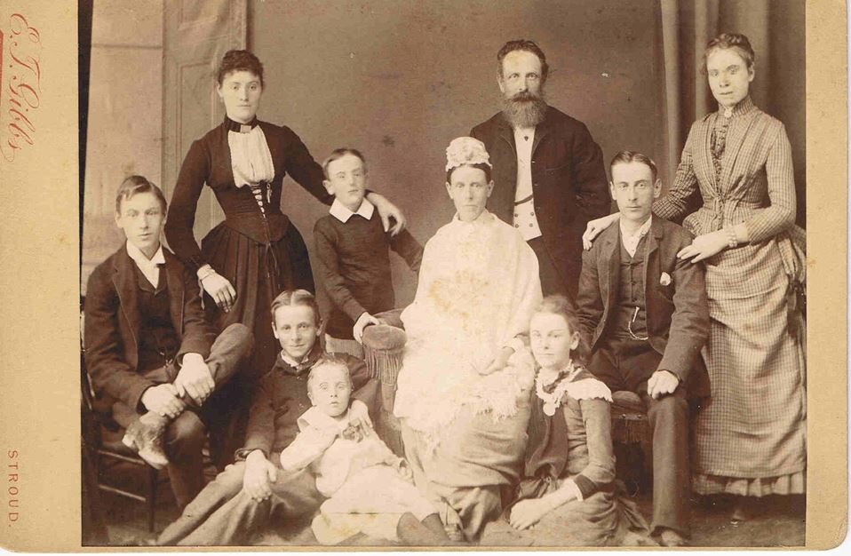

Dear Cousin
I am pleased to receive a line from you and hope some day to see some of you in our country which would be a great pleasure to us all. I have been expecting every day to receive a letter from Mr. Campbell with his photo & Mrs. Campbell's too, have Cousin Grace's photo we do not have her marriage name. We should like your photo with Mr. Hoyt, your son and Ina's [sic] very much. And we'll send you our family group as soon as we have it. My wife & youngest son 4 yrs old is gone to London for a change which the Doctor has advised. She is a great sufferer at times, generally weak, we have had 9 children we lost one very suddenly dying in his mother's arms in a fit while at Breakfast one morning, the youngest but one. Our eldest's name is Eva she is 21 years old in March and has just undergone an operation having a kind something taken out of the side of her neck on Wednesday last is going on very favorably indeed. The second is a daughter Mabel Mary is almost 20 and teaches in a small school in a village 1 mile from here. Out oldest son Richard William who has written to Ina [sic] is 18 yrs. old last May and is pupil teacher in his last year at the school in our town. FitzHerbert 16 last March working with me in the trade. Alexander Clinch was born March 3rd, 1872 13 yrs last birthday. Louisa Ellen born Feby 18th 1874 11 yrs last birthday. Edward Claude born 28th Sept. 1876 Arthur Austin who is dead born 15th July 1878 and Percy Robert born Whitsunday June 5th 1881. The Town we live in is only 2 1/2 miles from my and my wife's birthplace the village of Avening where Uncle Thomas your grandfather and your mother was born. We began courting at the early age of two years and neither of us even walked or talked to another sweetheart and at the age of 20 we got married. We have had a great deal of trouble and sickness but hope please God it will result in one benefit hereafter. You will like to have a little of your grandfather's antecedents. His mother was the daughter of [a] farmer of the village of Avening who kept several Horses and Cows about 200 acres of land and I should think must have been quite well off. My Grandfather Clinch and your Great-Grandfather Clinch belonged to a good family from Quenington about 16 miles from Avening.
- Uncle Thomas, your grandfather, was the eldest son Born in 1776
- Ann his sister was born Nov 12th 1778
- Sarah Nov 30th 1780
- Elizabeth May 11th 1783
- John Feby 24th 1786
- Alexander April 8th 1790
- Charles Jany 17th 1793
- Mary my dear mother April 16th 1799
My Father was Richard Essex he married my mother as his 2nd wife when he was 64 years old and my mother over 42. Mother only had two children 1st a daughter who only lived a few hours and me. I was born May 22nd 1842 and my wife is about 1 year older. The farming interest here suffer very much indeed as corn is at such a low price and the natural consequence land's proprietors suffer which necessarily causes a great dulness [sic] in trade generally. My business has been fearfully bad this past summer but we have a few jobs now. Cloth manufacture is the staple industry of this part of the country but the trade has suffered correspondingly with other trades and there is 10 or 12 factories cloth and silk now lying idle. I sincerely hope that you and Mr. Hoyt will get better in health and that our young cousins J.D. and Ina [sic] will keep in good health. We shall be pleased to hear from you any time you like to send us a line. when you see Mr. Campbell, Mrs. Campbell or Grace kindly give our kind love and tell them we are expecting to hear from them every day and to receive their photo, hoping soon to receice all yours with kindest love and affection from me and all my family allow me to remain your affectionate cousin
Endnotes
-
 [My best guess is -- Left to Right] Fitzherbert Essex, Mabel Mary Essex, Edward Claude Essex [whom I knew], Percy Robert Essex (seated), Alexander Clinch Essex (standing), Anna (Caudle) Essex, Peter Clinch Essex (bearded), Louisa Ellen Essex, Richard William Essex, & Eva (Essex) Knill Newman
- Peter was a cabinet maker.
- The Rev. Canon Edward Claude Essex visited my parents' home several times when I was a teen-ager, sometimes staying for weeks at a time. And we corresponded a number of times when he was at home in England. He preferred to be addressed as "Cousin Claude," but in his absence we usually referred to him as "The Canon."
- William Lucas, farmer in Avening, b. abt. 1729. He and wife Mary Chappel, b. abt. 1732, were the parents of Elizabeth (Lucas) Clinch, mother of Thomas Clinch and of Mary (Clinch) Essex.
- Any kind of grain, but most often referred to wheat.
- Avening was in the Cotswold hills, famous for their Cotswold Sheep - raised for both meat and wool. The abundance of wool and of swift running streams to power spinning machines and textile mills brought the industry there at the beginning of the Industrial Revolution.